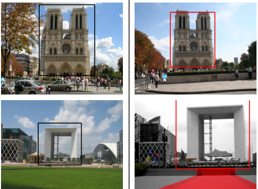
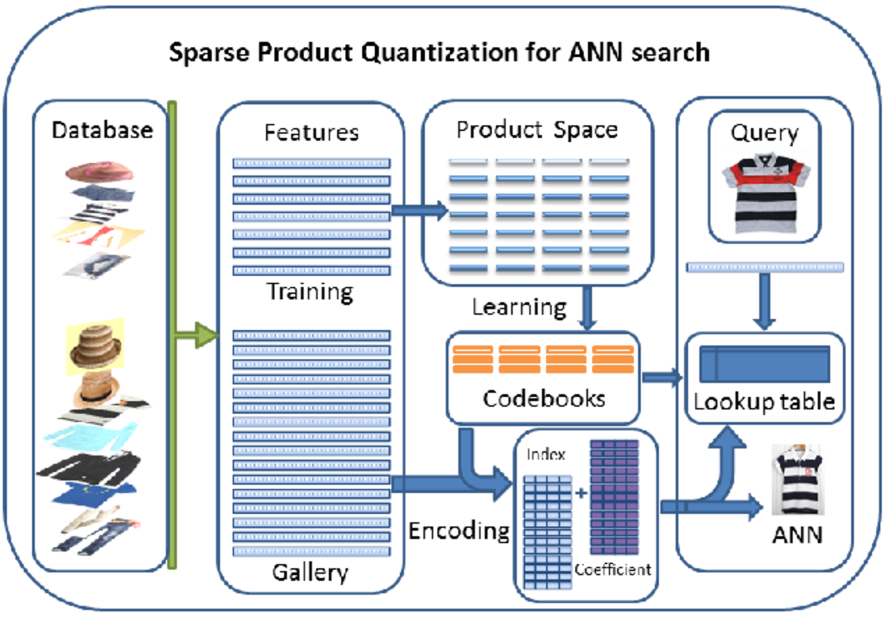

Zhiyuan ZhongM.Sc CandidateCollege of Computer Science Zhejiang University zhiyuan.chung AT gmail dot com |
About Me
I am a 3th year M.Sc student supervised by Prof. Jianke Zhu. Before that, I received my Bachelor degree in Computer Software from South China University of Technology.
Research Interest
I am interested in Computer Vision and Machine Learning. Currently I am working in Big Data analysis and large-scale image retrieval. I believe throgh Machine Learning mankind can achieve better life.
Research
|  | We propose an efficient direct spatial matching (DSM) approach to directly estimate the scale variation using region sizes, in which all feature matches voted for estimating geometric transformation. DSM is much faster and more accurate than traditional method. |
|  | we propose a novel approach called Sparse Product Quantization to encoding the high-dimensional feature vectors into sparse representation. We optimize the sparse representations of the data vectors by minimizing their quantization errors, making the resulting representation is essentially close to the original data in practice. |
Publications
2015
Fast Object Retrieval Using Direct Spatial Matching
Zhiyuan Zhong, Jianke Zhu, Hoi, S.C.H.
IEEE Transactions on Multimedia (TMM), 2015. (PDF)
Scalable Image Retrieval by Sparse Product Quantization
Qingqun Ning, Jianke Zhu, Zhiyuan Zhong, Steven C.H. Hoi, Chun Chen
IEEE Transactions on Multimedia (TMM), under revision. (Project)